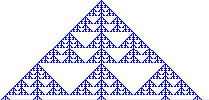
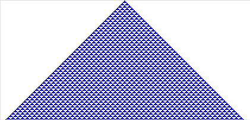
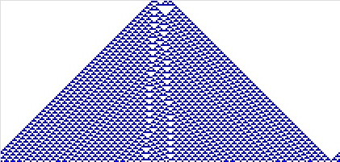

| 4 (a) |  |
| (b) | |
In (b) we see that on a scale larger than the initial distribution of live cells, the pattern matches that evolving from a single live cell.
(c) Here are the pictures from a single cell, and from a small distribution of live cells. Note here the change appears to stay confined to a limited region.
|  |
|  |
Return to Exercise 4.